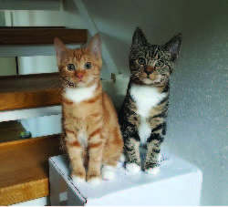

Krystal Thinks Cats!

Cats are clearly the better house pet, for many reasons...
- Cats for the most part are perfectly happy staying indoors.
You won’t need to worry coming home early to let them outside!
They actually might even prefer when you’re out…
- Having a pest problem? If you already have a cat you probably answered no to that question.
Cats will keep all the mice and bugs away from your house!
- Other than when it’s time to eat, cats are far quieter than dogs. You won’t have to worry when
the mail man stop by, cats won’t be causing a scene.
- Now, though it might be strange that your cat has a little house inside specifically to use the bathroom,
you won’t have to go outside in the middle of winter like someone with a dog would.
- if there is one thing dogs love, it'r rolling in the mud!
cats on the otherhand, hate it. They love staying clea, and eve give themselves their own baths.
For these reasons, cats make the best house pet!
- Krystal